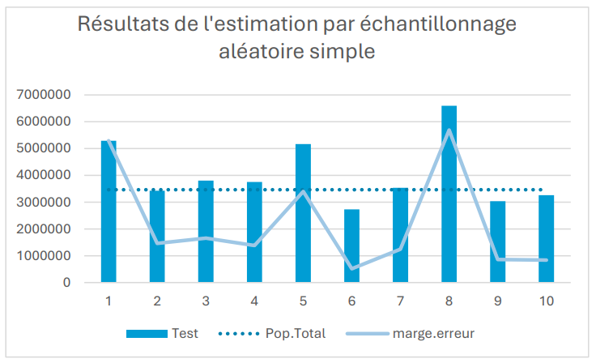
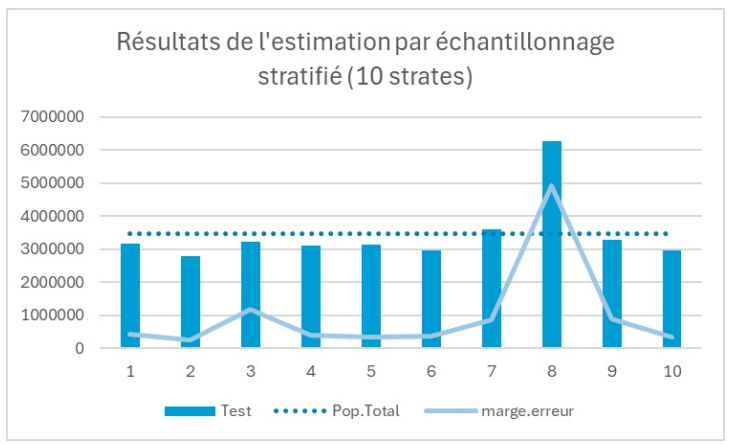
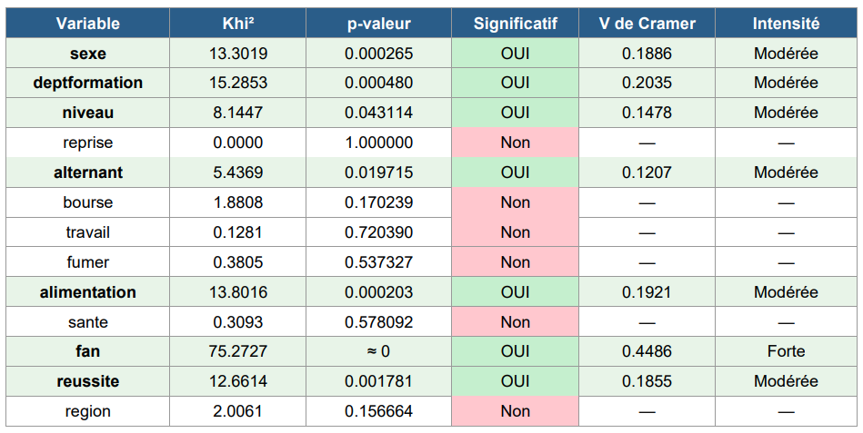

📊 SAÉ — Estimation par échantillonnage
Test de plusieurs méthodes d'échantillonnage pour estimer la population en Bretagne. L'objectif était d'appréhender ces méthodes et d'identifier les paramètres pouvant avoir une influence sur leurs résultats.
Ce projet était la continuité de notre cours de statistique inférentielle. Nous y avions vu des outils statistiques tels que les estimateurs ponctuels, les intervalles de confiance ou encore le test du χ². Ce projet avait pour but de nous faire manipuler ces outils tout en nous faisant comprendre l'importance d'avoir des données homogènes pour réaliser des estimations par échantillonnage.
Le projet était divisé en 2 parties. Premièrement, nous devions estimer la population d'une région (Bretagne pour mon groupe) par échantillonnage en calculant des IDC. Deuxièmement, nous devions utiliser une enquête (sondage) sur la pratique sportive au sein du BUT afin de déterminer, via le test du χ² (et le V de Cramér), le lien entre les variables et le fait de pratiquer une activité sportive. Pour cela, nous avons utilisé le logiciel R.
Dans la première partie, on a réalisé un échantillonnage simple, puis des échantillonnages stratifiés (4 puis 10 strates). Cela nous a permis de comprendre que des données hétérogènes génèrent des estimations peu fiables (due à une grande marge d'erreur et à des résultats éloignés de la réalité). L'échantillonnage stratifié résout partiellement ce problème en créant des sous-populations plus homogènes entre elles.
Dans la deuxième partie, il a fallu nettoyer les données, tester l'indépendance avec le test du χ² et, si cette hypothèse était invalidée, mesurer la force du lien avec le V de Cramér. Il a également fallu interpréter ces liens en utilisant notamment les contributions, afin d'identifier quelle modalité crée le lien.
La principale difficulté a été d'appréhender ces nouvelles techniques statistiques afin de les utiliser correctement dans leur contexte et de produire des interprétations justes.


